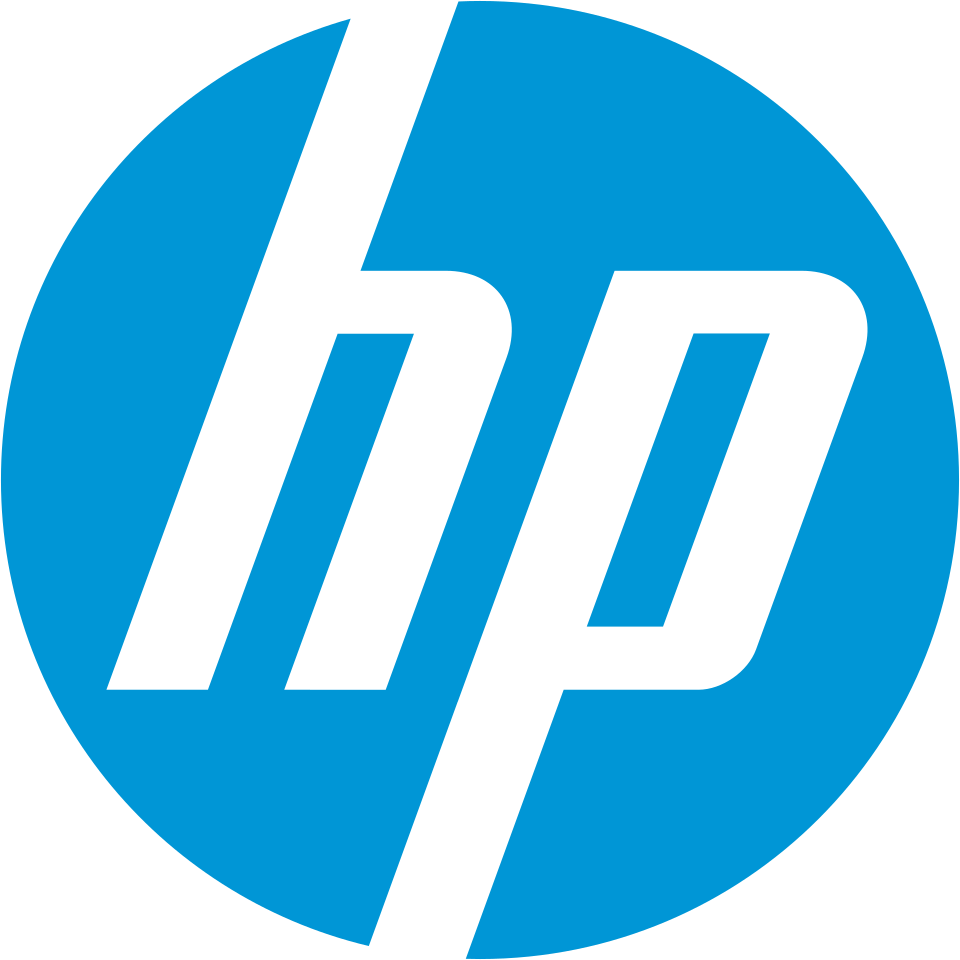

HP Inc.
HP(HP Inc.)는 미국 팰로앨토에 본사를 둔 개인용 컴퓨터 제조·판매 회사이다. 개인용 컴퓨터와 노트북, 프린터, 복합기, 3D프린터를 개발하고 생산한다.
최종 업데이트

HP Inc.는 어떤 브랜드인가
HP는 개인용 컴퓨터 관련 사업과 프린터 및 복합기 사업을 담당한다. 2015년 휴렛 팩커드의 기업용 장치·클라우드 사업과 개인용 컴퓨터 관련 사업이 분할되면서 출범한 회사이다.
프린터 업계에서 세계 1위와 세계 시장 점유율 24%를 유지한다. 노트북 사업에서는 Lenovo에 근소한 차이로 이어지는 2위를 차지한다.
코로나19 이후 시장에서 성장했으며 2022년부터 Lenovo와 Dell의 판매량이 하락하는 가운데 성장세를 이어간다. 2024년에는 중국 PC 공장 대부분을 태국으로 이전하는 계획을 발표하며 생산 거점 조정을 추진한다.
HP Inc.는 어떻게 시작되고 성장했나
HP는 2015년 11월 1일 한 회사였던 휴렛 팩커드가 두 회사로 분할되면서 설립된 회사이다. 개인용 컴퓨터 관련 사업을 맡은 회사는 휴렛 팩커드의 약자인 HP로 이름을 변경했고, 기업용 장치와 클라우드 사업은 Hewlett Packard Enterprise로 분리했다.
2017년 11월에는 삼성의 프린터 부문을 10억 5천만 달러에 인수했다. 2019년 11월부터 2020년 3월 31일까지 Xerox의 강제 인수 합병 시도를 받았으나 코로나19 이후 해당 시도는 실패했다.
HP Inc.의 브랜드 아이덴티티는 무엇인가
개인용 컴퓨터와 인쇄 장치 사업을 함께 운영하며 프린터 세계 시장 점유율 24%를 유지한다는 점이 HP를 구분하는 지점이다.
HP Inc.의 대표 제품과 서비스는 무엇인가
HP의 주요 제품군은 개인용 컴퓨터와 노트북 컴퓨터, 프린터, 프린터 복합기, 3D프린터이다. 개인용 컴퓨터 사업에서는 제품을 개발하고 생산하며 미국과 중국을 포함한 세계 시장에서 판매한다.
프린터 사업은 세계 시장 점유율 24%를 기록하며 업계 세계 1위를 유지하는 사업 부문이다. 노트북 사업은 Lenovo에 이어 근소한 차이로 세계 2위를 유지하며, 중국 시장에서도 같은 순위를 유지한다.
HP Inc.는 지금 어떤 상태인가
HP는 프린터 시장에서 세계 1위, 노트북 시장에서 세계 2위를 유지하며 개인용 컴퓨터와 인쇄 장치 사업을 운영한다. 2024년 8월에는 중국에 있는 PC 공장 대부분을 태국으로 이전하고 현재 생산량의 70%를 공급할 수 있는 공장을 세우겠다는 계획을 발표했다.
이는 제조 부문에서 중국의 영향력을 줄이려는 방향이다.
HP Inc. 로고는 어떻게 변해왔나
자주 묻는 질문
HP Inc.는 어느 나라 브랜드인가요?
HP Inc.는 미국의 기술·전자 브랜드입니다.
HP Inc.는 언제 설립되었나요?
HP Inc.는 2015년 설립되었습니다.
HP Inc.의 브랜드 아이덴티티는 무엇인가요?
개인용 컴퓨터와 인쇄 장치 사업을 함께 운영하며 프린터 세계 시장 점유율 24%를 유지한다는 점이 HP를 구분하는 지점이다.
HP Inc.의 대표 제품은 무엇인가요?
HP의 주요 제품군은 개인용 컴퓨터와 노트북 컴퓨터, 프린터, 프린터 복합기, 3D프린터이다.
HP Inc.는 현재 어떤 상태인가요?
HP는 프린터 시장에서 세계 1위, 노트북 시장에서 세계 2위를 유지하며 개인용 컴퓨터와 인쇄 장치 사업을 운영한다.
HP Inc.의 창업자는 누구인가요?
HP Inc.의 창업자는 휴렛 팩커드입니다(위키데이터 기준).
HP Inc.의 본사는 어디에 있나요?
HP Inc.의 본사는 팰로앨토에 있습니다(위키데이터 기준).
출처와 검증
HP Inc. 관련 참고: 공식 웹사이트 · 위키데이터 Q21404084 · 한국어 위키백과 · 영어 위키백과. 브랜드명은 한글과 원어를 함께 표기하되 데이터에 없는 표기는 만들지 않습니다. 기원 국가·설립연도는 검수된 정의문에서 확인된 값을 우선하고, 없을 때만 공식 웹사이트 URL이 일치하는 위키데이터 개체의 값을 씁니다. 위키데이터 값은 2026-09-12 기준입니다.